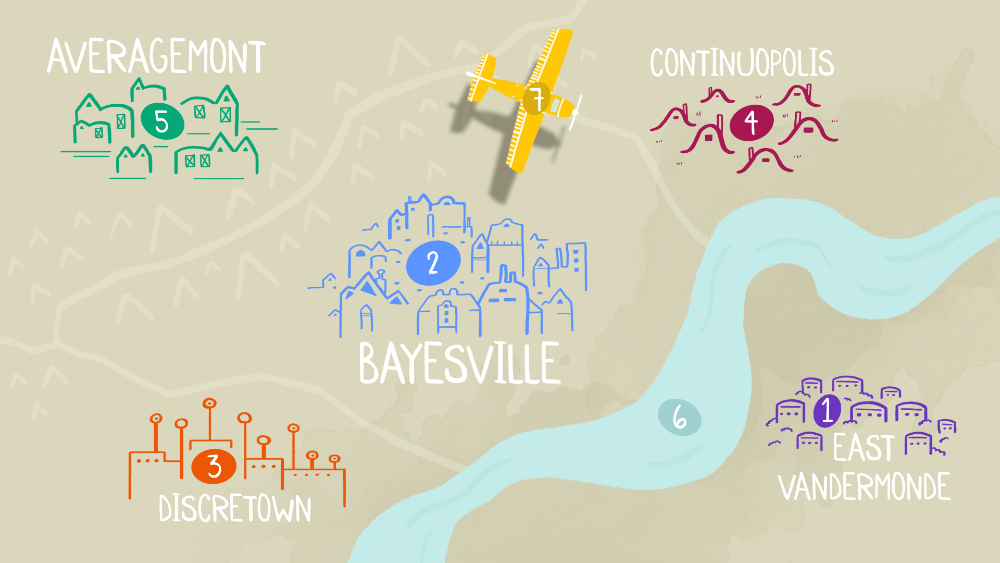

With the transition with online learning, we noticed it might be nice to have some additional asynchronous material for you (our students) to utilize as you learn about probability. The videos are organized on a per week basis, each video will have a description, including the topics it covers and its type. Some videos are 'reviewing content' videos that go over the concepts you've seen in lecture and in the textbook, with a few examples to support the theory. Other videos aim to explain the solution to a textbook, homework, section, or strategic practice problem. You can also go to the STAT110 website for many, many more resources!
Hover and click the rows to navigate!
| Week 1 | Introducing Probability and Counting |
|---|---|
| Week 2 | Conditioning, Bayes' Theorem, LOTP |
| Week 3 | Simpson's Paradox, Random Variables, PMF, CDF |
| Week 4 | Bernouilli, Binomial, Geometric, Negative Binomial and Hypergeometric Distributions |
| Week 5 | Expectation and Variance, LOTUS, Poisson Distribution, Chicken-and-egg |
| Midterm | Quite many things |
| Week 6 | Continuous RVs, Normal Distribution, Uniform Distribtion, Universality of the Uniform |
| Week 7 | The Normal, Uniform, and Exponential Distributions |
| Week 8 | Poisson Processes, Moments, and Joint, Marginal and Conditional Distributions |
| Week 9 | Covariance, Correlation, Multivariate Normal and Uniform Distributions, Multinomial Distribution |
| Week 10 | Multivariate Normal Distribution, Transformations, Beta Distribution, Gamma Function |
| Final | Markov Chains and even more things |